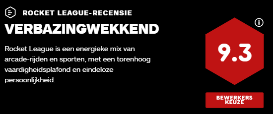

Een spel dat nog steeds net zo gemakkelijk op te pikken is met een vaardigheidsplafond dat ergens in een lage baan om de aarde zweeft.
Maar er is een gouden laag van strategie en mechanische diepte verscholen in het chaotische beslag van metaal. Het timen van een salto, looprol of omhaal om contact te maken met de bal en hem onder een precieze hoek te laten zeilen, vereist een opmerkelijke vaardigheid. Die basisprincipes, in combinatie met deskundig teamspel en verbluffende door booster aangedreven luchtmanoeuvres, versterken Rocket League als een spel dat nog steeds net zo gemakkelijk op te pikken is met een vaardigheidsplafond dat ergens in een lage baan om de aarde zweeft.
Bij de lancering voelde de inhoud rond die gameplay een beetje barebones. Sindsdien is het echter aanzienlijk uitgewerkt met slimme alternatieve modi die verschillende vaardigheden benadrukken en variatie toevoegen. De Snow Day-hockeymodus vervangt een dichte, extra grote puck voor de stuiterbal; Hoops is een basketbalvariant die de nadruk legt op luchtspel; Dropshot is een tweezijdige verdiepingsbrekende modus; en de Rumble-modus deelt power-ups uit die spelers verstoren en de bal beïnvloeden. Het is allemaal een hoop plezier.
En natuurlijk schittert de competitieve afspeellijst voor de traditionele 1v1, 2v2, 3v3 en 4v4 omdat het geweldige laddersysteem Rocket League ontbrak om op de een of andere manier doelen te halen voor het gemak van oppakken en spelen, met seizoensgebonden cosmetische beloningen en opscheppen terwijl je probeert door de gerangschikte niveaus te klimmen.
Beslissingen beslissingen Over het algemeen blijft Rocket League een uitgebalanceerd multiplayer-speelveld. Hoewel de mechanische verschillen tussen de gratis auto's en het grote assortiment betaalde downloadbare auto's merkbaar zijn, zijn ze nauwelijks relevant. Natuurlijk, sommige auto's draaien iets sneller, sommige hebben betere hitboxen om te flippen, maar deze kleine verschillen zijn alleen echt van belang op het hoogste niveau van concurrentie, waar een paar bescheiden aankopen niet te veel gevraagd lijken.
Vonnis
Het kleurrijke, absurde auto-sport-concept van Rocket League werkt zo goed omdat de energie van de arcade-gameplay samengaat met de diepgaande teamgebaseerde strategie en de verscheidenheid aan modi. Het is buitengewoon zeldzaam om een multiplayer-game te vinden die gastvrij en benaderbaar is voor nieuwe spelers en zo ingewikkeld dat de beste spelers hun brood kunnen verdienen door de diepte ervan te beheersen. Rocket League is een gouden voorbeeld van het omzetten van een goed idee in iets geweldigs.
score
Rocket League-recensie - een turbogeladen plezier om te spelen
Het concept is even dwaas als simpel: voetbal met raketaangedreven auto's. Maar het is de uitvoering die ervoor zorgt dat dit multiplayer-plezier echt van de grond komt
Hoe je videogames ook als een entertainmentmedium beschouwt, je moet toegeven dat het een aantrekkelijk idee is om voetballers te vervangen door raketaangedreven auto's. En Rocket League slaat toe als een door een raket aangedreven trein. Vanaf de eerste seconden, terwijl de motor gromt onder je almachtige trekkervinger, voelt dit niet alleen fris maar perfect gevormd aan.
Teams van raketaangedreven auto's staan tegenover elkaar in een afgesloten arena, waar de muren omhoog kunnen worden gereden en alle hoeken zijn afgerond voor maximale veerkracht. Aan beide uiteinden is een groot doel, en ergens in het midden is een gigantische bal, ongeveer twee keer zo hoog als de auto's, die heeft wat voelt als zijn eigen lage-zwaartekrachtregels: hij hangt in de lucht, beweegt met tegenzin na tikken, en zelfs wanneer hij wordt vermoord, zal hij zelden een raketmotor overtreffen.
Dan probeert het ene team meer doelpunten te maken dan het andere. De dynamiek van het raken van een bal met een klein raket-aangedreven voertuig verschilt duidelijk van die van de voet, maar dezelfde principes zijn van toepassing - iedereen die ooit vijf tegen vijf heeft gespeeld, zal meteen thuis zijn met de sleutelrol van ricochets, die de bal tegen muren voor slimme stuiters of beuken in hoeken voor verrassingsfoto's. Zelfs als het in het begin een beetje lastig kan zijn om het ding frontaal te raken.
Een van de dingen die Rocket League echt speciaal maken, is de diepte van de besturing en de leercurve die je doormaakt terwijl je er beter mee wordt. Simpele dingen zijn enorm leuk. Je vroege games zullen vol zwaaiende voertuigen en mosh pits zijn, maar het voelt nog steeds geweldig, en het uitvoeren van complexere bewegingen voelt nog beter. Je leert al snel de heerlijke knikken in het accelereren, hoe lang je een sprong in de lucht kunt hangen en wanneer je all-in of back-off moet gaan. Al snel "draai" je de auto om parallelle rivalen in te halen, rijd je tegen muren op om een bal voor de springende massa te neuzen, zelfs halverwege de sprong het sap te raken en de lucht in te gaan.
De titulaire raketmotor is een tweesnijdend zwaard, in staat om een auto over het veld naar een losse bal te schieten (soms dwars door een ongelukkige tegenstander), maar je net zo gemakkelijk hopeloos laten stranden na een verkeerde inschatting. De combinatie van zo'n zinderende precisie met het meer luie, geaarde momentum van de bal is onweerstaanbaar.
De rest van deze review kan je lezen via de bovenstaande link
score

Demolition Derby ontmoet voetbal/hockey om urenlang entertainment te creëren!
Om te beginnen weet ik niet zeker of ik hier te diep op in wil gaan of niet... de game is hoe dan ook geweldig, maar ik ben bang dat als ik het meeste uitleg, sommigen misschien denken dat ze het begrijpen en nee langer moeten spelen om het uit te zoeken, lol.
Deze game is een ingenieus idee om een hybride-mode, zoals vermeld in de titel, sloopderby te combineren met voetbal, hockey of basketbal. De game is het leukst om online te spelen met andere menselijke tegenstanders, maar kan ook net zo geweldig zijn in singleplayer, zowel in het seizoen als in de tentoonstelling. Seizoen heeft selectors voor hoe lang je het seizoen wilt hebben, samen met de mogelijkheid om teamgrootte en een paar andere opties te selecteren, terwijl tentoonstelling je in staat stelt te kiezen tussen speltypen, waaronder "hoepels" (basketbal), "sneeuwdag" (puck-slapping hockey), "soccar" (meer als de standaard meer), en ik geloof willekeurig of zoiets ... er was een vierde optie, maar ik kan me niet herinneren wat het was terwijl ik dit schrijf. Met de tentoonstellingsopties kun je heel precies bepalen hoe je wilt dat de game speelt...
De manier waarop het spel speelt, is dat elk team zijn voertuig selecteert en hoe ze het willen aanpassen ... eenmaal klaar, gebruiken ze de auto's om door stadions te rijden om te proberen een bal te schieten of in een doel of hoepel te pucken. (Hoops is geweldig in tentoonstellingen, maar ik zou kunnen voorstellen om geen lage zwaartekracht te gebruiken zoals ik deed, omdat het LANG tijd kost om op die manier een foto te maken, lol.) Dat is het uitgangspunt en de samenvatting ... het klinkt simplistisch , maar het is ZEKER een aanrader!! Er is ook nitro-boost in de game, wat in tegenstelling tot de meeste games hier erg handig is. Met Boost kun je de bal snel wegschieten van een ander voertuig, je snel naar je doel laten komen om een schot te blokkeren, of je kunt zelfs de auto van een tegenstander laten exploderen door er op volle snelheid tegenaan te slaan (geen zorgen, ze respawnen).
Aan het einde van elk level worden de scores opgeteld en ontgrendelen spelers aanpassingsitems voor hun voertuigen... waarvan vele echt cool zijn, met een grote selectie aan auto's en aanpassingen. Er zijn ook mods voor het spel, maar ik weet niet zeker of ik het echt aanbeveel... Ik heb het een tijdje geprobeerd en kreeg ze niet aan het werk, echt, helemaal niet, en ik ben meestal een meester in modding... het zorgde ervoor dat het spel op sommige plaatsen langzamer ging lopen en uiteindelijk crashte, dus ik gaf het op met het modden van dit spel.
De game heeft ook GEWELDIGE flexibiliteit in gameplay-opties ... zoals hierboven vermeld, kun je online of solo spelen. Maar de game ondersteunt ook bot-play in solo, evenals split-screen en multi-controller coop!